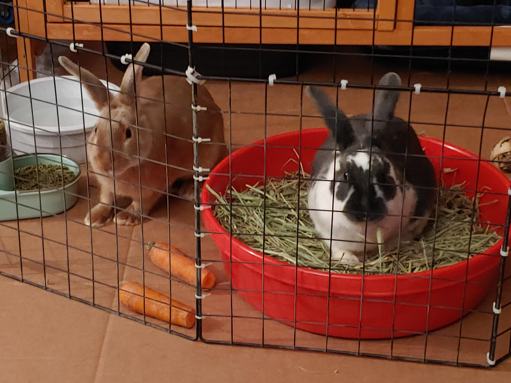

Rabbits are active creatures that need "zoomie" space. At PurrPets, we believe a cage should be a home base, not a prison. Let's set up the ultimate indoor warren!

Whether you use an X-Pen or a dedicated bunny room, you need these items:
| Feature | The PurrPets Standard | Why? |
|---|---|---|
| Flooring | Area rugs or foam mats. | Rabbits have no pads on their feet; they slip on hardwood! |
| Litter Box | Large tub with paper bedding + Hay. | Rabbits eat and go at the same time. Efficiency! |
| Hidey House | At least two exits (Cardboard is fine). | Rabbits feel safer when they have an "escape route." |
| Water | Heavy ceramic bowl. | Drip bottles are unnatural and hard to clean. Bowls stay fresher! |
Rabbits have a biological urge to chew "vines" (which to them, look exactly like your power cords). To prevent a PurrPets emergency, you must:
Did you know rabbits are as easy to litter train as cats? Simply place their hay rack directly inside or above the litter box. They will naturally munch and do their business in the same spot. It's the ultimate multitasking!